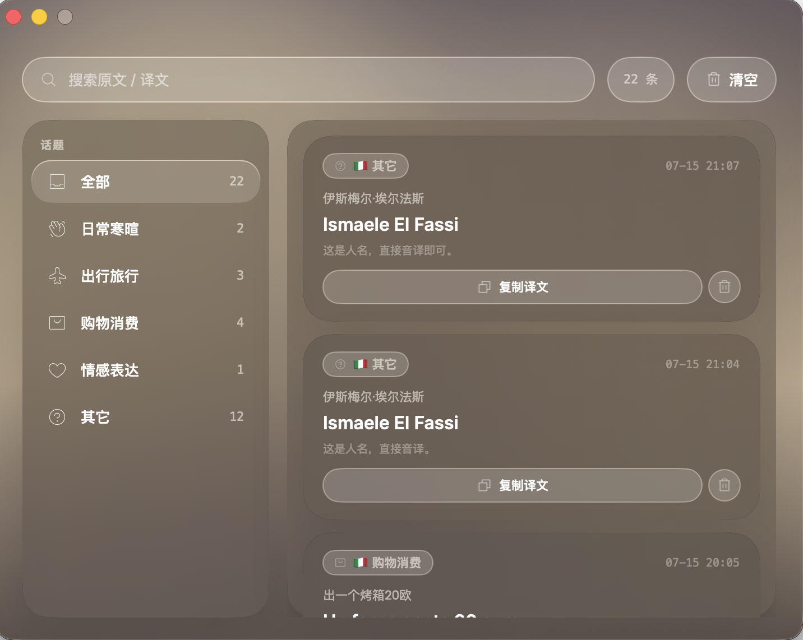
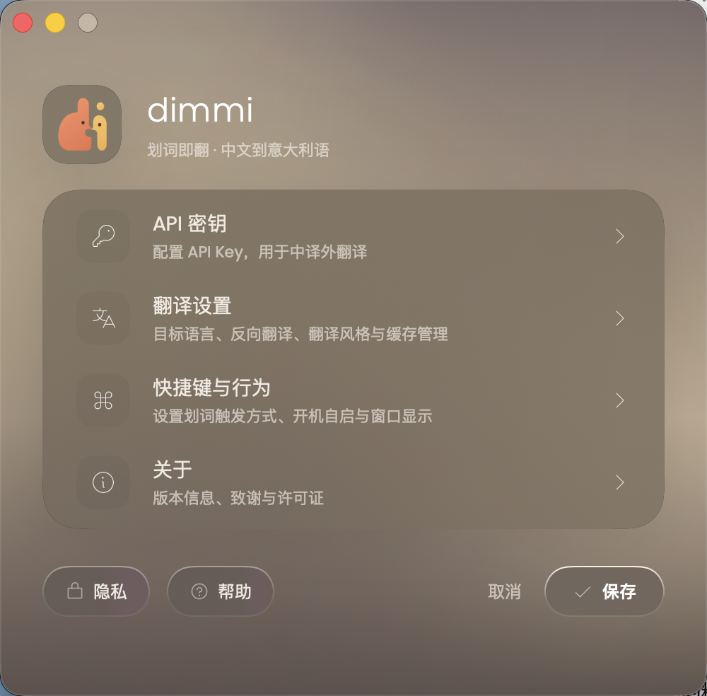

English → Italiano
I'm a bit tired today, but I still want to get this done.
Oggi sono un po’ stanco, ma voglio comunque portare a termine questa cosa.
portare a termine
To complete, to finish something to the end.
Native macOS menu bar translator
Select to translate, break the language barrier.
dimmi brings natural translations and usage insights right where you are reading. Copy or select text, and the translation card appears near your cursor—no switching windows, no vendor lock-in.
Stay in the flow
From trigger to review, every step happens within your current context.
Triggered by default on copy. With accessibility permissions, you can translate just by releasing the mouse.
A floating card appears near your cursor with the main translation, phrase breakdown, and bilingual examples.
Real translations are automatically saved to your local history, filterable by topic and fully searchable.
Built for language learners
Trigger in browsers, docs, chats, and editors. The popup stays near your cursor, dismissing when you're done.
Vorrei un caffè, per favore.
I would like a coffee, please.
per favore
Please (used for polite requests)
Italian, English, French, German, Spanish, Japanese, Korean, and Portuguese. Write out or read back.
Optional phrase analysis provides breakdowns, register context, and bilingual examples.
Supports Anthropic, 21+ OpenAI-compatible providers, and custom compatible endpoints.
Built with SwiftUI, runs in the menu bar. Draggable cards, selectable text, supports Esc and click-away to close.
A quiet place for words
Clear settings, quiet history. Keep your focus on the language, not the tool.


Privacy, plainly stated
dimmi has no middleman servers. Requests are sent directly from your Mac to your chosen model provider or custom endpoint.
Read full privacy policydimmi neither collects nor forwards your API requests.
No accounts, no cloud sync, and no analytics SDKs.
Default copy mode requires no accessibility permissions; only text selection mode will request it.
API Keys are temporarily stored in local app preferences, not yet migrated to Keychain. Not recommended on shared macOS accounts.
GitHub preview release
Current build supports Apple Silicon and Intel, requiring macOS 15+. This is a GitHub preview release without Developer ID signature or Apple notarization. For the first launch, right-click the app in Finder and select "Open".
FAQ
The app is currently available as a GitHub Beta. Translations use your own API Keys, so any model costs are paid directly to your chosen provider.
You can preview the interface with local examples. Real translations require an API Key from a provider, or a connection to a compatible local/self-hosted endpoint.
The current GitHub Beta is not yet signed with a Developer ID or notarized by Apple. Please download from the official GitHub Releases, and right-click to "Open" the app in Finder for the first time.
This permission is used to detect when you finish dragging a mouse selection and to read the selected text. The default copy mode does not require this permission. You can revoke it anytime in System Settings.
When auto-translate on copy is enabled, new text matching character length conditions may be sent to your selected model. Please pause auto-translation before copying passwords, tokens, or highly sensitive secrets.

Hai qualcosa da dire?
Stay in your flow, switch contexts less, and discover better ways to express yourself.
Current Draft: MIT License · v0.1.0 Beta